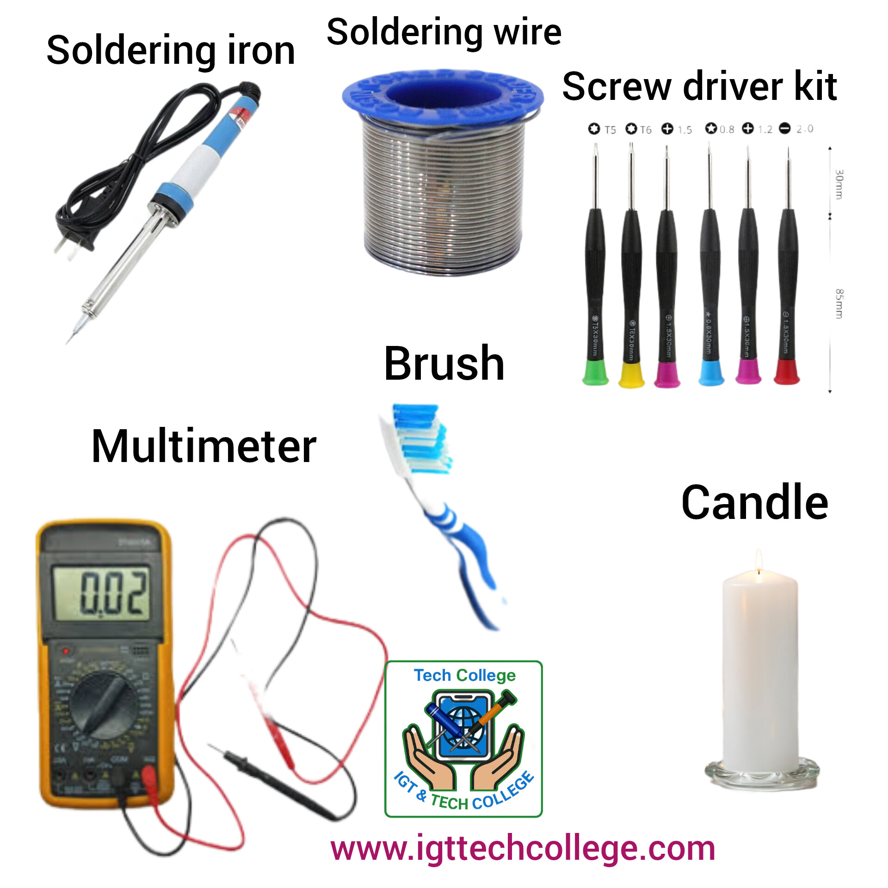
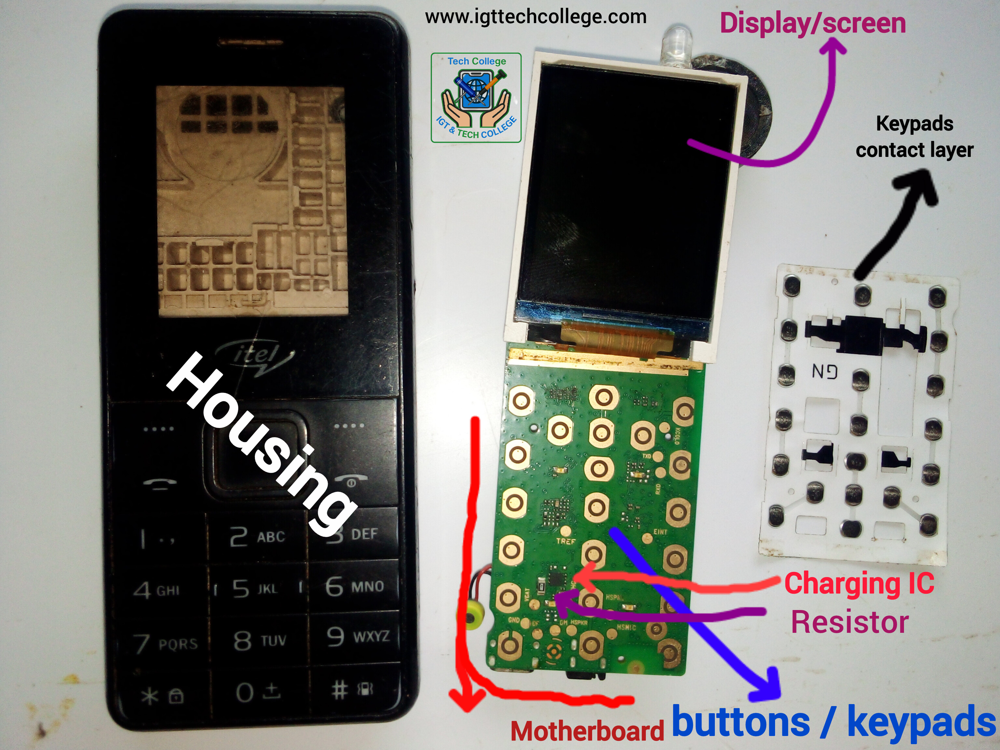

Kuanza kujifunza jinsi ya kutengeneza simu
Kuna mambo muhimu unapaswa kuzingatia ili...
Kuna mambo muhimu unapaswa kuzingatia ili kujifunza kutengeneza simu na kuna hatua za kufuata ili usikate tamaa kabla ya kukamilisha mambo yote muhimu. kozi. Kwanza, jihakikishie kuwa ni muhimu kuwajifunza, fikiria juu ya uzuri wao na fikiria ni lini utakuwa mtaalam na watu wataambiana kuwa ulichofeli hutaweza kukifanya popote pengine
Unaombwa uepuke kuruka darasa, mwanafunzi akitoroka shule kamwe hatafaulu vizuri ataishia kuacha shule, hali kadhalika unajifunza kutengeneza simu, epuka kuruka kozi fulani kabla ya kuifikia kwa sababu unaipenda, lazima ufuate hatua zifuatazo. na usitake kujifunza kila kitu kwa siku moja, kitu kingine ni kwamba unatakiwa kujifunza kwanza kutengeneza simu ndogo ambazo zimekuwa na keypads kabla ya kujifunza kutengeneza kubwa ambazo ni smartphone.
Kwanza, unapaswa kusoma utangulizi huu wote, ujifunze zana zote muhimu, kisha ujifunze sehemu zote za simu, ujifunze jinsi zinavyofanya kazi, ujifunze jinsi ya kuziondoa na kuzibadilisha, na ujifunze kile ambacho kila sehemu hufanya inapokatika, kwa mfano, spika, maikrofoni, mifumo ya kuchaji, vioo, vitufe, vituo vya betri, IC, sehemu za sim kadi, plugs za sikioni na mengine mengi... ukishajua yote haya, kisha unaweza kwenda hatua inayofuata na kujifunza yafuatayo.
Sasa anza kujifunza na kuelewa simu mahiri, jifunze ni nini kinachounda simu mahiri au simu kubwa na ujifunze jinsi zinavyofanya kazi, jifunze jinsi ya kuziondoa na kuzibadilisha, na kujua kila sehemu ni nini na kinachosababisha kufa, kwa mfano, spika, maikrofoni, mifumo ya kuchaji, kioo, vifungo, vituo vya betri, aina zote za IC, slot za sim card, plugs za simu na mengine mengi.. kama tutakavyokufundisha, ukishajua jinsi ya kurekebisha smartphone iliyokufa, utaenda hatua inayofuata.
Sasa ni wakati wa kujifunza programu ama Software, lazima kwanza ujue simu ni nini na inafanya kazi gani bila kuonekana kwa macho ambapo utaiunganisha na kompyuta. kujua madereva na muunganisho wanajua firmware, kutawanya faili, IMEI na nambari ya serial inafanya nini na inafanya nini na jinsi ya kuibadilisha, kuwaka, kuondoa nywila. , ukiondoa FRP na kujua uendeshaji wake, uumbizaji na mengine mengi tutakufundisha ukikaa nasi. na pia itakuhitaji uanze na simu ndogo kisha ujifunze na kisha simu janja.
Aina mbili za wafundi wa simuUnatakiwa kuchagua kati ya hizo mbili, yaani Hardware na Software, unaweza kuchagua moja au zote mbili lakini epuka kuzichanganya na kwanza ujifunze moja na ujifunze. alafu jifunze mengine kisha utajifunza kila kitu na ujiunge na hiyo kazi na itakuwa vizuri kwako, nakutakia heri.
Mafundi wa programu kwenye simu(Software)
Hao ndio wanaotengeneza simu ambazo hazihitaji chochote kuanzia mipangilio hadi zile tata zinazohitaji kompyuta na siri nyingi za baadhi ambazo haziruhusiwi. katika baadhi ya nchi, hawatakiwi kufungua simu na hata kuendesha simu katika nchi nyingine.
Mafundi wa maunzi(Hardware)
Hao ndio wanaorekebisha simu zilizokufa, kama vile kutoa betri na kuibadilisha, na wale wanaohitaji kufungua simu na kufikia maunzi yake. ni wale ambao ni watumiaji wa mukono

Zana zinazohitajika kwa ukarabati wa simu
Kuna zana muhimu sana na zingine sio muh...
Kuna zana muhimu sana na zingine sio muhimu sana kwa anayeanza, watu wengi huwa wanakata tamaa hapa na hii ni kwa sababu ya makosa ya wakufunzi wao ambao wanawaambia kwamba wanapaswa kwanza. nunua zana zote ambazo hawajui jinsi ya kutumia. Tunaelewa kuwa unapaswa kufuata ujuzi ulio nao katika kununua zana na maarifa yako yanapoongezeka, unapaswa kuongeza zana zaidi.
Kwa hiyo nitakuambia kulingana na ufahamu wako ili uweze kuelewa vizuri maana unaweza usiweze kuwa na mahitaji yote
Zana za wanaoanza
Ya kwanza ni Soldering iron, Soldering wire, screw driver kit, Candle(buje), multimeter, brush, Simu za kujifunza na kuwa na umeme pale unapojifunza au nishati ya jua ya kutosha,
Zana zinazofuata
Cha kwanza ni Hot airgun retwotrk station, kibano, waya wa kuruka, kishikilia PCB, kiboresha betri, usambazaji wa umeme wa DC, Hadubini, kitenganishi cha skrini ya LCD, bandika, si hivyo tu, kuna vingine vidogo. vitu vidogo utakavyohitaji kadri ujuzi wako unavyoongezeka, picha ifuatayo inakuonyesha zana hizi zote.

Kwa anayeanza, zana ni nafuu sana kuliko ninavyoweza kukuambia na utaona na tukifika kwenye somo hili, nunua mara moja misingi niliyokuambia kutoka kwa anayeanza.
Sehemu za simu ndogo na utendaji wake
Ni muhimu ukafahamu sehemu za simu na ka...
Ni muhimu ukafahamu sehemu za simu na kazi zake kwa sababu hiyo ndiyo itakuhitaji ujue tatizo la simu yako na jinsi ya kulitatua. Simu zote zina sehemu, hata zisiwe za aina moja, lakini usisahau kuwa simu mahiri(smartphone) zina sehemu nyingi (spea) kuliko. simu za jadi(Feacture phones).
Kwanza, zijue sehemu za simu ndogo vizuri kwa sababu linapokuja suala la kujifunza kuhusu smartphones, anayeanza haanzii hapo, wakati ukifika, tutakufundisha kuhusu wao. Picha zifuatazo zinaonyesha majina na sehemu muhimu za simu ndogo.
Nyumba za simu
Housing ni sehemu ya plastiki ya simu, nadhani unaweza kuiita chochote unachotaka, kwa hivyo hazifanani kulingana na aina ya simu ambayo itawekwa.
Ubao wa mama / msingi wa simu/motherboard
Kila simu duniani ina ubao wa mama(motherboad) kwa sababu ndipo sehemu nyingine zote za simu zimewekwa. Simu hazina ubao mama sawa isipokuwa ziwe za aina moja. Ubao wa mama una njia kuu mbili, ambazo ni chanya + na hasi- na ukihesabu njia ambazo zimefichwa ndani ya ubao wa mama, zingine zote ni GND (Ground) ambayo ni hasi -.
Vitufe / KEYPADS
Keypads ni baadhi zinazoonekana kwa nyuma na tunazibonyeza lakini kuna ambazo ziko ndani zinajua funguo tunazobonyeza. Funguo hizo unazoona zinafanana na dhahabu iliyoyeyuka kwa sababu ziko ndani na hutolewa tunapobonyeza funguo(keypads)zinazoonekana kwa nyuma. Funguo(batani) hizo ndani zimeundwa na chanya + na hasi -
Funguo hizo unazoona ndani ya magurudumu ni magurudumu madogo yaliyo + na yale hasi hufanya kazi kwenye magurudumu ya pili na chini. Mgusano huu chanya huunganishwa na hasi au ardhi wakati mgusano huo unatumiwa mara moja na CPU na programu za programu, hapo ndipo tunapoona umuhimu wa safu ya mawasiliano ya keypads(keypads contact layer), tuiongelee hapa👇
safu ya mawasiliano ya vitufe(keypads contact layer)
Safu ya mawasiliano ya vitufe au safu inayofunika waasiliani ni kitu kidogo ambacho kinaonekana kutokuwa na maana lakini kina kazi yenye nguvu. Kama tulivyosema hapo juu, kwa kifungo au ufunguo wa kufanya kazi, kwanza unaunganisha chanya na hasi, vitu hivi vidogo vinavyokufanya uangalie safu ya mawasiliano ya keypads ni wale wanaounganisha pande mbili na mawasiliano hufanya kazi. Mtu anapobonyeza funguo za simu, kila mwasiliani huonekana nyuma, kila mgusano ni sawa na mwasiliani na pia ni sawa na waasiliani wa mbele, hii inafanywa kwa njia tatu ili mwasiliani aandike unachotaka, (kubonyeza waasiliani wa nyuma). na kisha kubonyeza safu ya mawasiliano ambayo pia inaunganisha chanya na hasi. Utajifunza mengi katika somo hili.
IC ya kuchaji na kipinga / charging IC
IC ya kuchaji ndiyo inayodhibiti nguvu ambayo simu inapokea na kuihamisha kwa betri, pamoja na kipingamizi, ambacho pia utajifunza mengi juu yake katika masomo ya ICs na utendaji wao. IC ikiwa imekufa hata ukiweka chaji chaji mpya simu itakuonyesha inachaji lakini power haiingii au inasema charging error na inaweza kusababisha hata simu kupata joto sana kiasi kwamba huwezi kuiweka mfukoni ukiwa umevaa nguo na kuzuia umeme kuzimika n.k.

Msemaji na utendakazi wake katika simu(speaker)
Spika au maikrofoni inawajibika kutoa sauti zinazosikika nje tunapocheza simu, iwe ni kadi ya SD au redio ya FM. na tunaposikiliza sauti ya mtu tunayezungumza naye tunapigiana simu, lakini spika ni tofauti na mic na pia tunaisikia. Tunapozungumza na mtu tunayezungumza naye, tunasikia sauti ya mtu tunayezungumza naye kupitia spika lakini kwenye tecno 528 ina mic nyingine kwa ajili hiyo. Spika huwa na waya mbili, waya nyekundu na nyeusi, nyekundu ni +(chanya) na nyeusi ni -(negative).
Ikiwa simu haichezi kwenye Redio ya FM au kadi ya SD, kipaza sauti labda imekufa, waya moja au zote mbili zimevunjika, lakini wakati mwingine. inaweza kusababishwa na diode zilizoharibiwa zinazounganisha spika kwenye ubao wa mama wa simu.
Maikrofoni na utendakazi wake(mic)
Kipaza sauti pia kinaundwa na waya mbili, chanya na hasi (+ na -). Kazi ya maikrofoni ni kurekodi sauti. Inanasa sauti yako na kuituma kwa mzungumzaji wa mtu unayezungumza naye ili aisikie. Na kwa upande wake, inanasa sauti ya mtu unayezungumza naye na kuituma kwa spika yako ili uweze kuisikia. Kwa hiyo ikiwa mtu unayempigia anasikia sauti yake lakini wewe husikii yako, basi mic ya simu yako ndiyo yenye tatizo kwa sababu haikuwa inakamata sauti yako na kumtumia.Na unapo rekodi, sauti haisikiki, lakini unasikia sauti ya kuzomea tu. Hii ni kwa sababu maikrofoni ina matatizo yafuatayo: maikrofoni iliyoharibika, waya iliyovunjika au moja, au uharibifu wa miunganisho kati ya maikrofoni na ubao mama.
Onyesha kioo (Display) na umuhimu wake
Kioo cha simu kinaundwa na aina nyingi tofauti kulingana na aina ya simu, wengine wana miguu 16,17,20,24, huku kwenye simu ndogo. tu kuwa na 16. Kazi ya kioo ni kuonyesha kilicho ndani ya motherboard ya simu kwa sababu ukiiondoa, simu bado itafanya kazi, lakini huwezi kuona inachofanya, ndiyo maana inaitwa Display kwa Kiingereza. Inaundwa na taa zinazotoa mwanga wakati wa giza, lakini inaonyesha kilicho ndani wakati unawasha, hata ikiwa taa hizo zimekufa.
Kwa vile skrini ina miguu au njia nyingi, kila njia ina utendakazi wake, kwa hivyo ikiwa tu inawasha nyeupe, inahitaji kuondolewa. na unaweza kufunga mpya au kuangalia njia ya kioo iliyoharibiwa na kuiunganisha, bila kusahau kwamba wakati mwingine inaweza kusababishwa na CPU ic, ambayo tutazungumzia. ukisakinisha nyingine na inaendelea kuwaka nyeupe, kuna njia zilizoharibika kwenye ubao wa mama au CPU ic ina tatizo.

Diode nyekundu / Mwenge(torch)
Mwenge ni diode inayoitwa Nyekundu(red diode) ambayo ina jukumu la kutoa mwanga, ina chanya + na hasi, mguu mrefu unaitwa mwingine na ni chanya + na ukiangalia kwa karibu mahali ambapo imeunganishwa kwenye ubao wa mama, kuna ishara ya kuunganisha na katika sehemu nyingi kwenye simu hakuna dalili za kuunganisha na kuondolewa Tutakusaidia kuelewa jinsi ya kufunga waya mpya kwa sababu ukifanya vibaya, haitafanya kazi. Ikiwa nuru ya simu haina mwanga, basi imevunjika au diode ndogo juu ya chini nyeusi imekufa. Zinaundwa na sehemu tofauti kulingana na aina ya simu kwa sababu zingine zina waya kama hii spika lakini zote zinafanana kwa sababu nyekundu ni chanya na nyeusi ni hasi.
Kamera / Camera
Madhumuni ya Kamera ni kupiga picha. Ikiwa simu haionyeshi picha ulizopiga kwa uwazi, inakuonyesha giza tu na ikiwa umepiga picha ya mtu au kitu, ubadilishe Kamera na kuweka mpya au uichukue kutoka kwa simu nyingine, ndivyo hivyo hivyo.
Nafasi za Simcard au mahali tunapoingiza simcard(simcardslot)
Hakuna simu isiyo na nafasi za simcard lakini zote hazijatengenezwa sawa, zingine zina moja, mbili, tatu au nne. Kwa hiyo simcard itakubali kufanya kazi kwenye simu nyingine lakini ukiiweka kwenye yako au kwenye simu ya mteja huyu inakataa kufanya kazi na kuonesha kuwa imeunguza simu badala yake inasema ingiza simcard (ikimaanisha ingiza simcard) basi slot ya simcard imeharibika au njia zake za kwenda kwenye cpu zimeharibika. Kwahiyo suluhu ni kutoa nafasi ya simcard na kuweka nyingine ndani lakini kuwa makini maana ni tofauti na simcard ambayo unaweza kufikiria inaingia lakini mtandao unapotea. (Tutazungumza pia juu ya hilo)
Nafasi ya SDCard /SDcard slot
Sdcard slot pia ina aina tofauti kulingana na simu ni. Kwa hivyo hii ndio tunaweka kumbukumbu au Sdcard ndani, ukiweka kumbukumbu nzuri ndani yake inakataa kufanya kazi kwa sababu slot ya sdcard imekufa au njia zinazoiunganisha na cpu (moyo wa simu) zimeharibika. Kwa hivyo suluhisho ni kuibadilisha na nzuri. Kuna chaneli 16 pande zote mbili, kwa hivyo hata ikiwa moja tu imevunjwa au kupinda, kumbukumbu haitafanya kazi ikiwa utaibadilisha na kuweka nyingine.
Mlango wa kuchaji /jeki ya kuchaji/ charging port
Lango la kuchaji ni lango ndogo ambalo tunachomeka kebo ya USB tunapochaji simu yetu, si tu kwa sababu pia inaunganisha simu kwenye kompyuta. Bandari za malipo kwa simu ndogo huja kwa aina tofauti, zinazoitwa na aina ya simu, lakini kuna njia 5 kwa jumla, na utajifunza wakati wakati unakuja. Ikiwa simu haichaji basi bandari ya kuchaji imeharibika kwa hivyo ibadilishe na nyingine, ingawa kuna sababu zingine zinaweza kusababishwa na ic chaji lakini nyingine ni chaji chaji ambayo imenisababishia njia zake.
Vituo vya betri /vituo vya betri/ battery terminals
Vituo vya betri vya simu za mkononi vina meno matatu ambapo tunachomeka betri lakini pia unaweza kukuta na nne lakini zote zina kazi sawa ya kuchukua nguvu kutoka kwenye betri na kuituma kwa kila sehemu ya simu, lakini vituo vinavyounganisha ni capacitor, diode, ICs ... Njia tatu zinazounda vituo vya betri zina chanya, hasi na mtetemo Kwa hivyo ikiwa ya kati imevunjika, simu itafanya kazi lakini zile za upande zimevunjika, inahitaji kuchukua nafasi ya vituo vya betri. Lakini njia hii ya kati ni muhimu kwa sababu inasaidia joto la kiasi cha joto bila ziada, hivyo ikiwa njia hii haifanyi kazi, kutakuwa na matatizo na joto la juu au joto la chini (joto nyingi au kidogo sana).
Programu-jalizi ya simu zinazosikilizwa(earnphone plugin)
Programu-jalizi ya masikioni ni mahali tunapochomeka vipokea sauti vya masikioni au vipokea sauti vya masikioni ili kusikiliza muziki. Ikiwa haifanyi kazi, inaweza kuwa ni kwa sababu ya vipokea sauti vya masikioni vilivyokufa au programu jalizi za earphone zilizoharibika. Suluhu ya tatizo ni kuondoa nyingine na pia ina chanya na hasi.
Pointi za mtandao / network points
Jina hili la pointi wa mtandao ni la kawaida kwa sababu ni pointi mbili, moja inaitwa GSM na nyingine inaitwa GND, ambayo ina maana ya ardhi. Madhumuni ya pointi za mtandao ni kutoa uunganisho wa mtandao kwenye antenna ya simu. Ikiwa unatazama kwa karibu, sehemu ya chuma kwenye nyumba ya simu pia imeunganishwa kwa sababu chuma hiki ni antenna ya simu. Wakati pointi za mtandao zinaondolewa kutoka kwa GND, unaweza kuziunganisha popote chini, lakini ikiwa ni GSM, unahitaji kuwaunganisha kulingana na mbinu zao (kaa nasi na utajifunza juu yao).
Kiosilata cha fuwele / saa halisi ya saa/ Crystals oscillator
Hivi ndivyo muda unavyowekwa kwenye simu na ukiiondoa, simu itakufa isipokuwa unajua jinsi ya kuichaji vizuri. Kiosilata hiki cha kioo kinaundwa na aina mbili, yaani RF (Reference Frequency) ambayo huweka mawimbi ya matumizi na mtandao na wengine, na RTC (real time oclock) ambayo inawajibika kwa muda kwenye simu (saa, tarehe na mwaka). Unaweza pia kuondoa simu ikiwa inakosa ishara ya kuichaji na mfumo unaotumia huacha ghafla.
CPU IC na Power IC
Nitalitaja hili kwa ufupi kwa sababu kuna somo limeandaliwa kwa ajili ya IC pale tu tunapopata masomo ya simu janja. CPU ndio moyo wa simu Ingawa IC ya nguvu ndiyo hutoa nguvu zinazohitajika kwa kila sehemu ya simu, bila hiyo simu haingeweza kufanya kazi na bila moyo haingefanya kazi pia. Moyo ni muhimu kama moyo wa mwanadamu, ndivyo CPU ilivyo kwenye simu (utaelewa).
Ufundi Simu (Phone Repairing)
Jifunze kutengeneza simu zako...
Ufundi simu unahusisha matengenezo ya vifaa vya simu za mkononi. Utajifunza jinsi ya kuchunguza matatizo, kubadilisha skrini, na kurekebisha matatizo ya programu. Kozi hii inalenga wanafunzi wa Kiswahili wanaotaka taaluma ya ufundi simu.